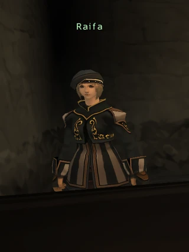
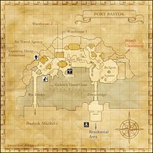

Description
Port Bastok is a city area in Bastok.
Map

Involved in Quests / Missions
NPCs
| Name | Location | Type |
|---|---|---|
| Agapito | (G - 6) | Quest Giver |
| Aishah | (F - 7) | — |
| Alib-Mufalib | (K - 7) | Quest NPC, Warp NPC |
| Argus | (L - 7) | Mission Giver |
| Bagnobrok | (I - 6) | Regional Merchant |
| Bartolomeo | (F - 7) | Quest NPC |
| Belka | (E - 7) | Regional Merchant |
| Benita | (J - 6) | Quest Giver |
| Blabbivix | (F - 6) | Merchant |
| Blayne | (G - 6) | — |
| Bodaway | (H - 8) | Airship Information Giver |
| Brita | (J - 7) | — |
| Carey | (G - 7) | — |
| Carmelo | (E - 6) | Quest Giver |
| Cheh Raihah | (K - 8) | — |
| Corann | (K - 6) | Quest Giver |
| Dahjal | (K - 8) | — |
| Dalba | (D - 7) | Past Event Watcher |
| Dehlner | (H - 5) | — |
| Denvihr | (G - 7) | Merchant |
| Dhen Tevryukoh | (I - 6) | Regional Merchant |
| Dulsie | — | Adventurer's Assistant |
| Eburacon | (G - 6) | — |
| Ehrhard | (G - 5) | Quest NPC |
| Ensetsu | (I - 5) | Quest Giver |
| Evelyn | (J - 7) | Regional Merchant |
| Evi | (H - 6) | Quest Giver |
| Evrain | (F - 7) | Quest NPC |
| Ferrol | (I - 7) | Quest Giver |
| Flaco | (E - 6) | Fame Checker |
| Flying Axe, I.M. | (L - 6) | Conquest Overseer; Bastok: National Guard |
| Fo Mocorho | (J - 11) | Weather Checker |
| Gallagher | (I - 11) | Event Item Storer |
| Galvin | (E - 7) | Merchant |
| Grin | (G - 7) | Quest Giver |
| Gudav | (H - 5) | Quest Giver |
| Gwinar | (J - 12) | Map Marker |
| H.A.R.P. Envoy | (J - 12) | Quest NPC |
| Hilda | (E - 6) | Quest NPC |
| Ihsan | (H - 6) | Adventurer's Assistant |
| Ilita | (E - 7) | Linkshell Distributor |
| Jabbar | (F - 6) | Tenshodo Merchant |
| Johanna | (G - 6) | — |
| Juroro | (I - 8) | Quest Giver |
| Kachada | (J - 6) | World Pass Dealer |
| Kaede | (J - 5) | Quest NPC |
| Kagetora | (F - 6) | Quest NPC |
| Klaus | (F - 7) | — |
| Kurando | (H - 6) | Quest Giver |
| Latifah | (J - 8) | Quest NPC |
| Lone Horn | (G - 6) | — |
| Mathurin | (F - 6) | — |
| Melloa | (D - 6) | Merchant |
| Mine Konte | (D - 7) | Quest NPC |
| Mokop-Sankop | (K - 8) | — |
| Mustafa | (G - 7) | — |
| Nalta | (K – 8) | — |
| Nicadio | (L - 7) | — |
| Nokkhi Jinjahl | (K - 8) | Traveling Merchant NPC |
| Numa | (E - 7) | Merchant |
| Oggbi | (E - 6) | Quest Giver |
| Ominous Cloud | (L-8) | Traveling Merchant NPC |
| Otto | (E - 6) | — |
| Panana | (D - 7) | Quest NPC |
| Patient Wheel | (F - 5) | Quest NPC |
| Paujean | (F - 6) | Quest Giver |
| Pelinvarde | (D - 7) | — |
| Powhatan | (E - 6) | Quest Giver |
| Pursuivant | (J - 12) | — |
| Qiji | (I - 7) | Quest Giver |
| Rafaela | (H - 6) | — |
 RaifaImage source | (D - 6) | Quest Giver |
| Rajesh | (G - 7) | — |
| Ravorara | (E - 7) | Quest Giver |
| Rex | (J - 7) | Map Dealer |
| Rin | (I - 6) | — |
| Romilda | (I - 7) | Quest Giver |
| Ronan | (K - 6) | Quest Giver |
| Rosswald | (J - 7) | Regional Merchant |
| Sawyer | (E - 6) | Merchant |
| Silver Owl | (F - 6) | Tenshodo Merchant |
| Steel Bones | (D - 8) | Quest NPC |
| Styi Palneh | (I - 7) | Title Changer |
| Sugandhi | (G - 7) | Merchant |
| Talib | (F - 6) | Quest Giver |
| Tete | (I - 5) | Quest NPC |
| Tiger Tooth | (J - 7) | — |
| Tilian | (F - 8) | Quest NPC |
| Tree Talker | (K - 7) | Special Event Coordinator |
| Trilok | (D - 6) | Quest Giver |
| Valah Molkot | (J - 12) | Quest Giver |
| Valeriano | (K - 8) | Traveling Merchant NPC |
| Varden | (G - 7) | — |
| Vattian | (G - 6) | Regional Merchant |
| Wurteh | (J - 13) | Room Renters |
| Yazan | (H - 6) | Quest Giver |
| Zeldaff | (H - 5) | — |
| Zoby Quhyo | (J - 7) | Regional Merchant |

Story walkthroughs in this area
| Story | Mission / quest |
|---|---|
| CoP 2-5 | Ancient Vows |
| CoP 3-1 | The Call of the Wyrmking |
| CoP 5-1 | The Enduring Tumult of War |
| ToAU membership | Tenshodo Membership |
References
External references describe their own server or retail rules. Documented Zenith changes take precedence.
Map credits: Map 1 — HorizonXI Wiki. Original game maps © SQUARE ENIX; redrawn maps retain the credited authorship and license.

Additional level-75 reference
|
The Bastok Port provides a mix of living quarters, shops and restaurants, plus access to Jeuno via the airship. Warehouses hold the various products arriving and departing via the airsips to and from distant lands. Adventurers are advised to use caution in some of the darker areas of the Port, as the Tenshodo are active here and always looking for an easy mark. Connecting Areas
|
 |


Fishing
| All Watersides | Cap |
|---|---|
| 5 | |
| 10 | |
| 19 | |
| 43 | |
| 86 | |
| 0 | |
| 0 | |
| 0 |
NPCs Found Here
|
|
Adapted from Eden Wiki: Port Bastok · Contributors and history · CC BY-SA 4.0. Revision 45591. Layout, links and optional background text adapted for Zenith.